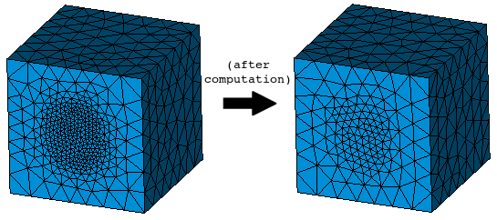

cfdmsh 4.0 documentation
cfdmsh 4.0 documentation cfdmsh 4.0 documentation


Applies a new cell size on a Netgen refinement created thanks to the MakeNetgenRefinement function.
-
def SetNetgenRefinement( size, hypo_and_compound = [None], clear = False ):

| Name | Description | Type | GUI selection [?] | Selection by name [?] | Recursive [?] | Default value |
|---|---|---|---|---|---|---|
| size | The desired cell size in the refinement area. | Float | - | - | - | - |
| hypo_and_compound | The refinement compound containing refinement edges (eg. "RefinementEdges_1") and the Netgen hypothesis. | List of 1 Mesh hypothesis + 1 Compound |
yes | yes | - | [None] |
| dim Value [?] | single Value [?] | Type | Number | Name |
|---|---|---|---|---|
| - | - | - | - | - |
from cfdmsh import * # To adapt to the cfdmsh installation method
box = geompy.MakeBoxDXDYDZ(200, 200, 200)
sphere = geompy.MakeSphereR(50)
sphere = geompy.MakeTranslation(sphere, 100, 0, 100)
AddToStudy(box, "box")
AddToStudy(sphere, "sphere")
mesh = smesh.Mesh(box)
algo = mesh.Tetrahedron(algo = smeshBuilder.NETGEN_1D2D3D)
hypo = algo.Parameters()
hypo.SetMaxSize(30)
hypo.SetMinSize(25)
compound = MakeNetgenRefinement(5, [sphere, hypo])
SetNetgenRefinement(10, [compound, hypo])
mesh.Compute()
The new cell size should not be lower than the one used to create the Netgen refinement.
cfdmsh 4.0 documentation
tougeron-cfd.com © 2016